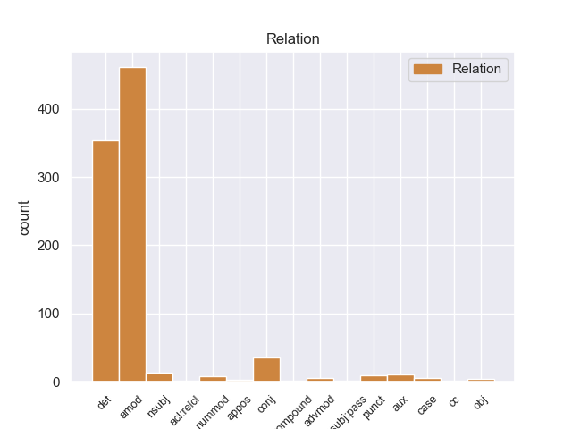
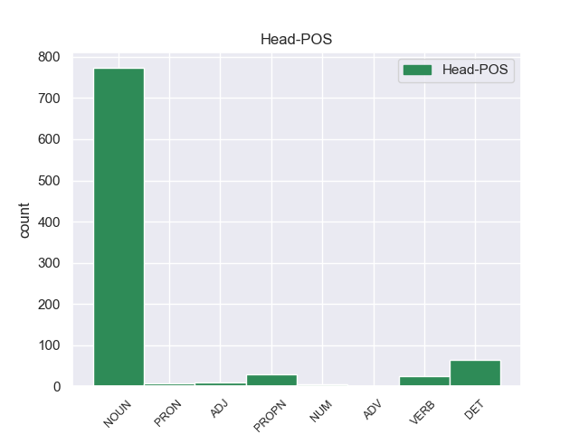
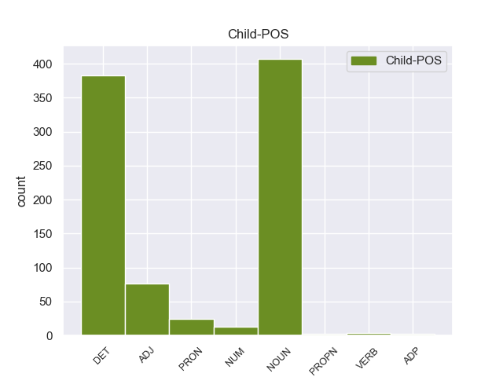

Distribution of features within this leaf



Agreement Rules sorted by frequency.
- When the dependent token is the adjectival modifier(amod) of the head token,
1 Υπ' _ _ _ _ 0 _ _ _
2 αυτές _ _ _ _ 0 _ _ _
3 τις _ _ _ _ 0 _ _ _
4 συνθήκες _ _ _ _ 0 _ _ _
5 , _ _ _ _ 0 _ _ _
6 η _ _ _ _ 0 _ _ _
7 Επιτροπή _ _ _ _ 0 _ _ _
8 Νομικών _ _ _ _ 0 _ _ _
9 Θεμάτων _ _ _ _ 0 _ _ _
10 , _ _ _ _ 0 _ _ _
11 της _ _ _ _ 0 _ _ _
12 οποίας _ _ _ _ 0 _ _ _
13 τη _ _ _ _ 0 _ _ _
14 θέση _ _ _ _ 0 _ _ _
15 αποδέχομαι _ _ _ _ 0 _ _ _
16 πλήρως _ _ _ _ 0 _ _ _
17 , _ _ _ _ 0 _ _ _
18 προτείνει _ _ _ _ 0 _ _ _
19 την _ _ _ _ 0 _ _ _
20 απόρριψη απόρριψη NOUN _ Case=Acc|Gender=Fem|Number=Sing 22 amod _ _
21 της _ _ _ _ 0 _ _ _
22 αίτησης ο NOUN _ Case=Acc|Gender=Fem|Number=Sing 0 _ _ _
23 άρσης _ _ _ _ 0 _ _ _
24 της _ _ _ _ 0 _ _ _
25 βουλευτικής _ _ _ _ 0 _ _ _
26 ασυλίας _ _ _ _ 0 _ _ _
27 την _ _ _ _ 0 _ _ _
28 οποία _ _ _ _ 0 _ _ _
29 υπέβαλε _ _ _ _ 0 _ _ _
30 το _ _ _ _ 0 _ _ _
31 γαλλικό _ _ _ _ 0 _ _ _
32 Υπουργείο _ _ _ _ 0 _ _ _
33 Δικαιοσύνης _ _ _ _ 0 _ _ _
34 , _ _ _ _ 0 _ _ _
35 σ _ _ _ _ 0 _ _ _
36 τη _ _ _ _ 0 _ _ _
37 μορφή _ _ _ _ 0 _ _ _
38 υπό _ _ _ _ 0 _ _ _
39 την _ _ _ _ 0 _ _ _
40 οποία _ _ _ _ 0 _ _ _
41 υποβλήθηκε _ _ _ _ 0 _ _ _
42 σ _ _ _ _ 0 _ _ _
43 το _ _ _ _ 0 _ _ _
44 Κοινοβούλιο _ _ _ _ 0 _ _ _
45 . _ _ _ _ 0 _ _ _
1 Υπάρχει _ _ _ _ 0 _ _ _
2 μια _ _ _ _ 0 _ _ _
3 κατηγορία _ _ _ _ 0 _ _ _
4 εναντίον _ _ _ _ 0 _ _ _
5 του _ _ _ _ 0 _ _ _
6 κ. _ _ _ _ 0 _ _ _
7 Pasqua _ _ _ _ 0 _ _ _
8 , _ _ _ _ 0 _ _ _
9 αλλά _ _ _ _ 0 _ _ _
10 όχι _ _ _ _ 0 _ _ _
11 εναντίον _ _ _ _ 0 _ _ _
12 του _ _ _ _ 0 _ _ _
13 κ. _ _ _ _ 0 _ _ _
14 Marchiani _ _ _ _ 0 _ _ _
15 , _ _ _ _ 0 _ _ _
16 για _ _ _ _ 0 _ _ _
17 παράνομη _ _ _ _ 0 _ _ _
18 χρηματοδότηση _ _ _ _ 0 _ _ _
19 προεκλογικής _ _ _ _ 0 _ _ _
20 εκστρατείας _ _ _ _ 0 _ _ _
21 μέσω _ _ _ _ 0 _ _ _
22 αποδοχής ο DET _ Case=Acc|Gender=Fem|Number=Sing 0 _ _ _
23 δωρεών _ _ _ _ 0 _ _ _
24 και _ _ _ _ 0 _ _ _
25 χρηματοδότησης _ _ _ _ 0 _ _ _
26 της _ _ _ _ 0 _ _ _
27 εκστρατείας _ _ _ _ 0 _ _ _
28 για _ _ _ _ 0 _ _ _
29 τις _ _ _ _ 0 _ _ _
30 ευρωπαϊκές _ _ _ _ 0 _ _ _
31 εκλογές ο NOUN _ Case=Acc|Gender=Fem|Number=Sing 22 det _ _
32 , _ _ _ _ 0 _ _ _
33 κατά _ _ _ _ 0 _ _ _
34 παράβαση _ _ _ _ 0 _ _ _
35 των _ _ _ _ 0 _ _ _
36 διατάξεων _ _ _ _ 0 _ _ _
37 του _ _ _ _ 0 _ _ _
38 άρθρου _ _ _ _ 0 _ _ _
39 L _ _ _ _ 0 _ _ _
40 52.8 _ _ _ _ 0 _ _ _
41 του _ _ _ _ 0 _ _ _
42 Εκλογικού _ _ _ _ 0 _ _ _
43 Κώδικα _ _ _ _ 0 _ _ _
44 . _ _ _ _ 0 _ _ _
1 Υπ' _ _ _ _ 0 _ _ _
2 αυτές _ _ _ _ 0 _ _ _
3 τις _ _ _ _ 0 _ _ _
4 συνθήκες _ _ _ _ 0 _ _ _
5 , _ _ _ _ 0 _ _ _
6 η _ _ _ _ 0 _ _ _
7 Επιτροπή _ _ _ _ 0 _ _ _
8 Νομικών _ _ _ _ 0 _ _ _
9 Θεμάτων _ _ _ _ 0 _ _ _
10 , _ _ _ _ 0 _ _ _
11 της _ _ _ _ 0 _ _ _
12 οποίας _ _ _ _ 0 _ _ _
13 τη _ _ _ _ 0 _ _ _
14 θέση _ _ _ _ 0 _ _ _
15 αποδέχομαι ο NOUN _ Case=Acc|Gender=Fem|Number=Sing 0 _ _ _
16 πλήρως _ _ _ _ 0 _ _ _
17 , _ _ _ _ 0 _ _ _
18 προτείνει _ _ _ _ 0 _ _ _
19 την _ _ _ _ 0 _ _ _
20 απόρριψη _ _ _ _ 0 _ _ _
21 της _ _ _ _ 0 _ _ _
22 αίτησης _ _ _ _ 0 _ _ _
23 άρσης _ _ _ _ 0 _ _ _
24 της _ _ _ _ 0 _ _ _
25 βουλευτικής _ _ _ _ 0 _ _ _
26 ασυλίας _ _ _ _ 0 _ _ _
27 την _ _ _ _ 0 _ _ _
28 οποία _ _ _ _ 0 _ _ _
29 υπέβαλε _ _ _ _ 0 _ _ _
30 το _ _ _ _ 0 _ _ _
31 γαλλικό _ _ _ _ 0 _ _ _
32 Υπουργείο _ _ _ _ 0 _ _ _
33 Δικαιοσύνης _ _ _ _ 0 _ _ _
34 , _ _ _ _ 0 _ _ _
35 σ _ _ _ _ 0 _ _ _
36 τη _ _ _ _ 0 _ _ _
37 μορφή _ _ _ _ 0 _ _ _
38 υπό _ _ _ _ 0 _ _ _
39 την _ _ _ _ 0 _ _ _
40 οποία _ _ _ _ 0 _ _ _
41 υποβλήθηκε υποβλήθηκε NOUN _ Case=Acc|Gender=Fem|Number=Sing 15 conj _ _
42 σ _ _ _ _ 0 _ _ _
43 το _ _ _ _ 0 _ _ _
44 Κοινοβούλιο _ _ _ _ 0 _ _ _
45 . _ _ _ _ 0 _ _ _
1 Εάν _ _ _ _ 0 _ _ _
2 θέλουμε _ _ _ _ 0 _ _ _
3 να _ _ _ _ 0 _ _ _
4 φέρουμε φέρουμε NOUN _ Case=Acc|Gender=Fem|Number=Sing 0 _ _ _
5 εις _ _ _ _ 0 _ _ _
6 πέρας πέρας NOUN _ Case=Acc|Gender=Fem|Number=Sing 4 nsubj _ _
7 το _ _ _ _ 0 _ _ _
8 μεταρρυθμιστικό _ _ _ _ 0 _ _ _
9 πρόγραμμα _ _ _ _ 0 _ _ _
10 που _ _ _ _ 0 _ _ _
11 παρουσιάσατε _ _ _ _ 0 _ _ _
12 , _ _ _ _ 0 _ _ _
13 τότε _ _ _ _ 0 _ _ _
14 το _ _ _ _ 0 _ _ _
15 Σώμα _ _ _ _ 0 _ _ _
16 πρέπει _ _ _ _ 0 _ _ _
17 να _ _ _ _ 0 _ _ _
18 αποκτήσει _ _ _ _ 0 _ _ _
19 ένα _ _ _ _ 0 _ _ _
20 esprit _ _ _ _ 0 _ _ _
21 de _ _ _ _ 0 _ _ _
22 corps _ _ _ _ 0 _ _ _
23 . _ _ _ _ 0 _ _ _
1 Τα _ _ _ _ 0 _ _ _
2 εγκλήματα _ _ _ _ 0 _ _ _
3 είναι _ _ _ _ 0 _ _ _
4 σοβαρά _ _ _ _ 0 _ _ _
5 και _ _ _ _ 0 _ _ _
6 ανήκουν _ _ _ _ 0 _ _ _
7 σε _ _ _ _ 0 _ _ _
8 μια _ _ _ _ 0 _ _ _
9 κατηγορία _ _ _ _ 0 _ _ _
10 για _ _ _ _ 0 _ _ _
11 την _ _ _ _ 0 _ _ _
12 οποία _ _ _ _ 0 _ _ _
13 κανονικά _ _ _ _ 0 _ _ _
14 δεν δεν DET _ Case=Acc|Gender=Fem|Number=Sing 15 aux _ _
15 προσφέρεται προσφέρεται NOUN _ Case=Acc|Gender=Fem|Number=Sing 0 _ _ _
16 βουλευτική _ _ _ _ 0 _ _ _
17 ασυλία _ _ _ _ 0 _ _ _
18 , _ _ _ _ 0 _ _ _
19 επειδή _ _ _ _ 0 _ _ _
20 δεν _ _ _ _ 0 _ _ _
21 αφορούν _ _ _ _ 0 _ _ _
22 τις _ _ _ _ 0 _ _ _
23 συνήθεις _ _ _ _ 0 _ _ _
24 και _ _ _ _ 0 _ _ _
25 προσήκουσες _ _ _ _ 0 _ _ _
26 δραστηριότητες _ _ _ _ 0 _ _ _
27 βουλευτή _ _ _ _ 0 _ _ _
28 του _ _ _ _ 0 _ _ _
29 Σώματος _ _ _ _ 0 _ _ _
30 , _ _ _ _ 0 _ _ _
31 ή _ _ _ _ 0 _ _ _
32 πολιτικού _ _ _ _ 0 _ _ _
33 που _ _ _ _ 0 _ _ _
34 δραστηριοποιείται _ _ _ _ 0 _ _ _
35 σε _ _ _ _ 0 _ _ _
36 μια _ _ _ _ 0 _ _ _
37 δημοκρατική _ _ _ _ 0 _ _ _
38 κοινωνία _ _ _ _ 0 _ _ _
39 . _ _ _ _ 0 _ _ _
1 Η _ _ _ _ 0 _ _ _
2 δράση _ _ _ _ 0 _ _ _
3 3 _ _ _ _ 0 _ _ _
4 περιλαμβάνει _ _ _ _ 0 _ _ _
5 τις _ _ _ _ 0 _ _ _
6 πρωτοβουλίες _ _ _ _ 0 _ _ _
7 σ _ _ _ _ 0 _ _ _
8 τον _ _ _ _ 0 _ _ _
9 τομέα _ _ _ _ 0 _ _ _
10 της _ _ _ _ 0 _ _ _
11 νεολαίας _ _ _ _ 0 _ _ _
12 , _ _ _ _ 0 _ _ _
13 η _ _ _ _ 0 _ _ _
14 δράση _ _ _ _ 0 _ _ _
15 4 4 NOUN _ Case=Acc|Gender=Fem|Number=Sing 17 punct _ _
16 την _ _ _ _ 0 _ _ _
17 υποστήριξη υποστήριξη NOUN _ Case=Acc|Gender=Fem|Number=Sing 0 _ _ _
18 πρωτοβουλιών _ _ _ _ 0 _ _ _
19 που _ _ _ _ 0 _ _ _
20 ξεπερνούν _ _ _ _ 0 _ _ _
21 το _ _ _ _ 0 _ _ _
22 πλαίσιο _ _ _ _ 0 _ _ _
23 των _ _ _ _ 0 _ _ _
24 μεμονωμένων _ _ _ _ 0 _ _ _
25 προγραμμάτων _ _ _ _ 0 _ _ _
26 και _ _ _ _ 0 _ _ _
27 διεξάγονται _ _ _ _ 0 _ _ _
28 από _ _ _ _ 0 _ _ _
29 κοινού _ _ _ _ 0 _ _ _
30 με _ _ _ _ 0 _ _ _
31 τα _ _ _ _ 0 _ _ _
32 προγράμματα _ _ _ _ 0 _ _ _
33 LEONARDO _ _ _ _ 0 _ _ _
34 και _ _ _ _ 0 _ _ _
35 ΣΩΚΡΑΤΗΣ _ _ _ _ 0 _ _ _
36 . _ _ _ _ 0 _ _ _
1 Για _ _ _ _ 0 _ _ _
2 τον _ _ _ _ 0 _ _ _
3 λόγο _ _ _ _ 0 _ _ _
4 αυτόν _ _ _ _ 0 _ _ _
5 θεωρούμε _ _ _ _ 0 _ _ _
6 σημαντικό _ _ _ _ 0 _ _ _
7 να _ _ _ _ 0 _ _ _
8 γίνεται _ _ _ _ 0 _ _ _
9 μεν _ _ _ _ 0 _ _ _
10 η _ _ _ _ 0 _ _ _
11 σχετική _ _ _ _ 0 _ _ _
12 εκπαίδευση _ _ _ _ 0 _ _ _
13 , _ _ _ _ 0 _ _ _
14 όχι _ _ _ _ 0 _ _ _
15 όμως _ _ _ _ 0 _ _ _
16 δύο δύο NUM NUM Case=Acc|Gender=Fem|Number=Plur|NumType=Card 17 nummod _ _
17 φορές φορά NOUN NOUN Case=Acc|Gender=Fem|Number=Plur 0 _ _ _
18 , _ _ _ _ 0 _ _ _
19 μία _ _ _ _ 0 _ _ _
20 για _ _ _ _ 0 _ _ _
21 την _ _ _ _ 0 _ _ _
22 απόκτηση _ _ _ _ 0 _ _ _
23 της _ _ _ _ 0 _ _ _
24 άδειας _ _ _ _ 0 _ _ _
25 οδήγησης _ _ _ _ 0 _ _ _
26 και _ _ _ _ 0 _ _ _
27 μία _ _ _ _ 0 _ _ _
28 σ _ _ _ _ 0 _ _ _
29 το _ _ _ _ 0 _ _ _
30 πλαίσιο _ _ _ _ 0 _ _ _
31 της _ _ _ _ 0 _ _ _
32 κατάρτισης _ _ _ _ 0 _ _ _
33 . _ _ _ _ 0 _ _ _
1 Για _ _ _ _ 0 _ _ _
2 τον _ _ _ _ 0 _ _ _
3 λόγο _ _ _ _ 0 _ _ _
4 αυτό _ _ _ _ 0 _ _ _
5 , _ _ _ _ 0 _ _ _
6 κύριε _ _ _ _ 0 _ _ _
7 Ύπατε ύπατε NOUN _ Case=Acc|Gender=Fem|Number=Sing 11 advmod _ _
8 Εκπρόσωπε _ _ _ _ 0 _ _ _
9 , _ _ _ _ 0 _ _ _
10 να _ _ _ _ 0 _ _ _
11 σκεφτούμε σκεφτούμος NOUN _ Case=Acc|Gender=Fem|Number=Sing 0 _ _ _
12 και _ _ _ _ 0 _ _ _
13 μαζί _ _ _ _ 0 _ _ _
14 με _ _ _ _ 0 _ _ _
15 μας _ _ _ _ 0 _ _ _
16 θα _ _ _ _ 0 _ _ _
17 πρέπει _ _ _ _ 0 _ _ _
18 να _ _ _ _ 0 _ _ _
19 σκεφτεί _ _ _ _ 0 _ _ _
20 και _ _ _ _ 0 _ _ _
21 η _ _ _ _ 0 _ _ _
22 Επιτροπή _ _ _ _ 0 _ _ _
23 κατά _ _ _ _ 0 _ _ _
24 πόσο _ _ _ _ 0 _ _ _
25 μπορούμε _ _ _ _ 0 _ _ _
26 να _ _ _ _ 0 _ _ _
27 χρησιμοποιήσουμε _ _ _ _ 0 _ _ _
28 τα _ _ _ _ 0 _ _ _
29 μέσα _ _ _ _ 0 _ _ _
30 που _ _ _ _ 0 _ _ _
31 διαθέτουμε _ _ _ _ 0 _ _ _
32 μέσω _ _ _ _ 0 _ _ _
33 της _ _ _ _ 0 _ _ _
34 συμφωνίας _ _ _ _ 0 _ _ _
35 σύνδεσης _ _ _ _ 0 _ _ _
36 με _ _ _ _ 0 _ _ _
37 το _ _ _ _ 0 _ _ _
38 Ισραήλ _ _ _ _ 0 _ _ _
39 , _ _ _ _ 0 _ _ _
40 φτάνοντας _ _ _ _ 0 _ _ _
41 ακόμα _ _ _ _ 0 _ _ _
42 και _ _ _ _ 0 _ _ _
43 σ _ _ _ _ 0 _ _ _
44 την _ _ _ _ 0 _ _ _
45 αναστολή _ _ _ _ 0 _ _ _
46 της _ _ _ _ 0 _ _ _
47 εν _ _ _ _ 0 _ _ _
48 λόγω _ _ _ _ 0 _ _ _
49 συμφωνίας _ _ _ _ 0 _ _ _
50 . _ _ _ _ 0 _ _ _
1 Κατά _ _ _ _ 0 _ _ _
2 κανόνα _ _ _ _ 0 _ _ _
3 , _ _ _ _ 0 _ _ _
4 για _ _ _ _ 0 _ _ _
5 τα _ _ _ _ 0 _ _ _
6 κεντρικά _ _ _ _ 0 _ _ _
7 σχέδια σχέδι NOUN _ Case=Acc|Gender=Fem|Number=Sing 0 _ _ _
8 περνούσαν _ _ _ _ 0 _ _ _
9 τέσσερις _ _ _ _ 0 _ _ _
10 έως έως NOUN _ Case=Acc|Gender=Fem|Number=Sing 7 case _ _
11 πέντε _ _ _ _ 0 _ _ _
12 μήνες _ _ _ _ 0 _ _ _
13 από _ _ _ _ 0 _ _ _
14 την _ _ _ _ 0 _ _ _
15 υποβολή _ _ _ _ 0 _ _ _
16 της _ _ _ _ 0 _ _ _
17 αίτησης _ _ _ _ 0 _ _ _
18 μέχρι _ _ _ _ 0 _ _ _
19 την _ _ _ _ 0 _ _ _
20 έγκριση _ _ _ _ 0 _ _ _
21 των _ _ _ _ 0 _ _ _
22 κονδυλίων _ _ _ _ 0 _ _ _
23 . _ _ _ _ 0 _ _ _
1 Ο _ _ _ _ 0 _ _ _
2 πρόεδρος _ _ _ _ 0 _ _ _
3 Ομπάμα _ _ _ _ 0 _ _ _
4 εξέφρασε _ _ _ _ 0 _ _ _
5 τα _ _ _ _ 0 _ _ _
6 συλλυπητήριά _ _ _ _ 0 _ _ _
7 του _ _ _ _ 0 _ _ _
8 προς _ _ _ _ 0 _ _ _
9 τα _ _ _ _ 0 _ _ _
10 θύματα _ _ _ _ 0 _ _ _
11 , _ _ _ _ 0 _ _ _
12 ενώ _ _ _ _ 0 _ _ _
13 δεσμεύτηκε _ _ _ _ 0 _ _ _
14 ότι _ _ _ _ 0 _ _ _
15 η _ _ _ _ 0 _ _ _
16 κυβέρνηση _ _ _ _ 0 _ _ _
17 θα _ _ _ _ 0 _ _ _
18 βοηθήσει _ _ _ _ 0 _ _ _
19 τους _ _ _ _ 0 _ _ _
20 πληγέντες _ _ _ _ 0 _ _ _
21 να _ _ _ _ 0 _ _ _
22 ανακτήσουν _ _ _ _ 0 _ _ _
23 τις _ _ _ _ 0 _ _ _
24 δυνάμεις _ _ _ _ 0 _ _ _
25 τους _ _ _ _ 0 _ _ _
26 και _ _ _ _ 0 _ _ _
27 να _ _ _ _ 0 _ _ _
28 αποκαταστήσουν ο VERB _ Case=Acc|Gender=Fem|Number=Sing 0 _ _ _
29 τις _ _ _ _ 0 _ _ _
30 ζημιές ζημιές NOUN _ Case=Acc|Gender=Fem|Number=Sing 28 obj _ _
31 . _ _ _ _ 0 _ _ _
1 Σ' _ _ _ _ 0 _ _ _
2 αυτό _ _ _ _ 0 _ _ _
3 το _ _ _ _ 0 _ _ _
4 σημείο _ _ _ _ 0 _ _ _
5 , _ _ _ _ 0 _ _ _
6 κύριε _ _ _ _ 0 _ _ _
7 Προεδρεύοντα _ _ _ _ 0 _ _ _
8 του _ _ _ _ 0 _ _ _
9 Συμβουλίου _ _ _ _ 0 _ _ _
10 , _ _ _ _ 0 _ _ _
11 σας _ _ _ _ 0 _ _ _
12 εφιστώ _ _ _ _ 0 _ _ _
13 την _ _ _ _ 0 _ _ _
14 προσοχή _ _ _ _ 0 _ _ _
15 σ _ _ _ _ 0 _ _ _
16 το _ _ _ _ 0 _ _ _
17 ψήφισμα ψήφισμα NOUN NOUN Case=Acc|Gender=Neut|Number=Sing 0 _ _ _
18 του _ _ _ _ 0 _ _ _
19 Ευρωπαϊκού _ _ _ _ 0 _ _ _
20 Κοινοβουλίου _ _ _ _ 0 _ _ _
21 σχετικά _ _ _ _ 0 _ _ _
22 με _ _ _ _ 0 _ _ _
23 τις _ _ _ _ 0 _ _ _
24 υπηρεσίες _ _ _ _ 0 _ _ _
25 γενικού _ _ _ _ 0 _ _ _
26 ενδιαφέροντος _ _ _ _ 0 _ _ _
27 , _ _ _ _ 0 _ _ _
28 που _ _ _ _ 0 _ _ _
29 ήταν _ _ _ _ 0 _ _ _
30 πολύ _ _ _ _ 0 _ _ _
31 σαφές σαφής ADJ ADJ Case=Nom|Gender=Neut|Number=Sing 17 acl:relcl _ SpaceAfter=No
32 . _ _ _ _ 0 _ _ _
1 Για _ _ _ _ 0 _ _ _
2 τον _ _ _ _ 0 _ _ _
3 λόγο _ _ _ _ 0 _ _ _
4 αυτόν _ _ _ _ 0 _ _ _
5 θεωρούμε _ _ _ _ 0 _ _ _
6 σημαντικό _ _ _ _ 0 _ _ _
7 να _ _ _ _ 0 _ _ _
8 γίνεται _ _ _ _ 0 _ _ _
9 μεν _ _ _ _ 0 _ _ _
10 η _ _ _ _ 0 _ _ _
11 σχετική _ _ _ _ 0 _ _ _
12 εκπαίδευση _ _ _ _ 0 _ _ _
13 , _ _ _ _ 0 _ _ _
14 όχι _ _ _ _ 0 _ _ _
15 όμως _ _ _ _ 0 _ _ _
16 δύο _ _ _ _ 0 _ _ _
17 φορές φορά NOUN NOUN Case=Acc|Gender=Fem|Number=Plur 0 _ _ _
18 , _ _ _ _ 0 _ _ _
19 μία ένας NUM NUM Case=Nom|Gender=Fem|Number=Sing|NumType=Card 17 appos _ _
20 για _ _ _ _ 0 _ _ _
21 την _ _ _ _ 0 _ _ _
22 απόκτηση _ _ _ _ 0 _ _ _
23 της _ _ _ _ 0 _ _ _
24 άδειας _ _ _ _ 0 _ _ _
25 οδήγησης _ _ _ _ 0 _ _ _
26 και _ _ _ _ 0 _ _ _
27 μία _ _ _ _ 0 _ _ _
28 σ _ _ _ _ 0 _ _ _
29 το _ _ _ _ 0 _ _ _
30 πλαίσιο _ _ _ _ 0 _ _ _
31 της _ _ _ _ 0 _ _ _
32 κατάρτισης _ _ _ _ 0 _ _ _
33 . _ _ _ _ 0 _ _ _
1 Δεκάδες δεκάδα NUM NUM Case=Nom|Gender=Fem|Number=Plur|NumType=Sets 2 compound _ _
2 χιλιάδες χιλιάδα NUM NUM Case=Nom|Gender=Fem|Number=Plur|NumType=Sets 0 _ _ _
3 πολίτες _ _ _ _ 0 _ _ _
4 έμειναν _ _ _ _ 0 _ _ _
5 χωρίς _ _ _ _ 0 _ _ _
6 ηλεκτρικό _ _ _ _ 0 _ _ _
7 ρεύμα _ _ _ _ 0 _ _ _
8 την _ _ _ _ 0 _ _ _
9 Τρίτη _ _ _ _ 0 _ _ _
10 , _ _ _ _ 0 _ _ _
11 ενώ _ _ _ _ 0 _ _ _
12 τα _ _ _ _ 0 _ _ _
13 σωστικά _ _ _ _ 0 _ _ _
14 συνεργεία _ _ _ _ 0 _ _ _
15 έδιναν _ _ _ _ 0 _ _ _
16 μάχη _ _ _ _ 0 _ _ _
17 με _ _ _ _ 0 _ _ _
18 τον _ _ _ _ 0 _ _ _
19 χρόνο _ _ _ _ 0 _ _ _
20 για _ _ _ _ 0 _ _ _
21 τη _ _ _ _ 0 _ _ _
22 διάσωση _ _ _ _ 0 _ _ _
23 ανθρώπων _ _ _ _ 0 _ _ _
24 . _ _ _ _ 0 _ _ _
1 Με _ _ _ _ 0 _ _ _
2 καταμετρημένο _ _ _ _ 0 _ _ _
3 ποσοστό _ _ _ _ 0 _ _ _
4 μεγαλύτερο _ _ _ _ 0 _ _ _
5 του _ _ _ _ 0 _ _ _
6 75% _ _ _ _ 0 _ _ _
7 , _ _ _ _ 0 _ _ _
8 ο _ _ _ _ 0 _ _ _
9 Ρικ _ _ _ _ 0 _ _ _
10 Σαντόρουμ _ _ _ _ 0 _ _ _
11 συγκέντρωσε _ _ _ _ 0 _ _ _
12 το _ _ _ _ 0 _ _ _
13 53% _ _ _ _ 0 _ _ _
14 των _ _ _ _ 0 _ _ _
15 ψήφων _ _ _ _ 0 _ _ _
16 , _ _ _ _ 0 _ _ _
17 ο _ _ _ _ 0 _ _ _
18 Μιτ _ _ _ _ 0 _ _ _
19 Ρόμνεϊ _ _ _ _ 0 _ _ _
20 έλαβε _ _ _ _ 0 _ _ _
21 το _ _ _ _ 0 _ _ _
22 17% _ _ _ _ 0 _ _ _
23 , _ _ _ _ 0 _ _ _
24 ο _ _ _ _ 0 _ _ _
25 Νιουτ _ _ _ _ 0 _ _ _
26 Γκίνγκρις ο NOUN _ Case=Acc|Gender=Fem|Number=Sing 0 _ _ _
27 το _ _ _ _ 0 _ _ _
28 16% 16% NOUN _ Case=Gen|Gender=Fem|Number=Sing 26 nsubj:pass _ _
29 και _ _ _ _ 0 _ _ _
30 ο _ _ _ _ 0 _ _ _
31 Ρον _ _ _ _ 0 _ _ _
32 Πωλ _ _ _ _ 0 _ _ _
33 έλαβε _ _ _ _ 0 _ _ _
34 το _ _ _ _ 0 _ _ _
35 13% _ _ _ _ 0 _ _ _
36 . _ _ _ _ 0 _ _ _
1 Ευχόμαστε _ _ _ _ 0 _ _ _
2 να _ _ _ _ 0 _ _ _
3 μπορέσουν _ _ _ _ 0 _ _ _
4 να _ _ _ _ 0 _ _ _
5 συζητηθούν _ _ _ _ 0 _ _ _
6 εκεί _ _ _ _ 0 _ _ _
7 , _ _ _ _ 0 _ _ _
8 θεωρώντας _ _ _ _ 0 _ _ _
9 ότι _ _ _ _ 0 _ _ _
10 θα _ _ _ _ 0 _ _ _
11 έχουν _ _ _ _ 0 _ _ _
12 ήδη _ _ _ _ 0 _ _ _
13 πραγματοποιηθεί _ _ _ _ 0 _ _ _
14 , _ _ _ _ 0 _ _ _
15 οι _ _ _ _ 0 _ _ _
16 διαδικασίες _ _ _ _ 0 _ _ _
17 που _ _ _ _ 0 _ _ _
18 αναφέρθηκαν _ _ _ _ 0 _ _ _
19 προηγουμένως _ _ _ _ 0 _ _ _
20 και _ _ _ _ 0 _ _ _
21 να _ _ _ _ 0 _ _ _
22 μπορέσουμε _ _ _ _ 0 _ _ _
23 να _ _ _ _ 0 _ _ _
24 βρούμε _ _ _ _ 0 _ _ _
25 και _ _ _ _ 0 _ _ _
26 με _ _ _ _ 0 _ _ _
27 τους _ _ _ _ 0 _ _ _
28 πολίτες _ _ _ _ 0 _ _ _
29 της _ _ _ _ 0 _ _ _
30 Ερυθραίας _ _ _ _ 0 _ _ _
31 τον _ _ _ _ 0 _ _ _
32 τρόπο _ _ _ _ 0 _ _ _
33 να _ _ _ _ 0 _ _ _
34 ξεκινήσουμε ξεκινήσουμε VERB _ Case=Acc|Gender=Fem|Number=Sing 0 _ _ _
35 την _ _ _ _ 0 _ _ _
36 ειρηνευτική _ _ _ _ 0 _ _ _
37 διαδικασία _ _ _ _ 0 _ _ _
38 , _ _ _ _ 0 _ _ _
39 να _ _ _ _ 0 _ _ _
40 αποκατασταθεί _ _ _ _ 0 _ _ _
41 η _ _ _ _ 0 _ _ _
42 δημοκρατία _ _ _ _ 0 _ _ _
43 και _ _ _ _ 0 _ _ _
44 ιδιαίτερα _ _ _ _ 0 _ _ _
45 να _ _ _ _ 0 _ _ _
46 αποδοθούν _ _ _ _ 0 _ _ _
47 εκ _ _ _ _ 0 _ _ _
48 νέου _ _ _ _ 0 _ _ _
49 σ _ _ _ _ 0 _ _ _
50 τους _ _ _ _ 0 _ _ _
51 πολίτες _ _ _ _ 0 _ _ _
52 , _ _ _ _ 0 _ _ _
53 γυναίκες _ _ _ _ 0 _ _ _
54 , _ _ _ _ 0 _ _ _
55 άνδρες _ _ _ _ 0 _ _ _
56 και _ _ _ _ 0 _ _ _
57 παιδιά _ _ _ _ 0 _ _ _
58 , _ _ _ _ 0 _ _ _
59 συνθήκες _ _ _ _ 0 _ _ _
60 ζωής _ _ _ _ 0 _ _ _
61 αποδεκτές _ _ _ _ 0 _ _ _
62 , _ _ _ _ 0 _ _ _
63 συνθήκες _ _ _ _ 0 _ _ _
64 για _ _ _ _ 0 _ _ _
65 τις _ _ _ _ 0 _ _ _
66 οποίες _ _ _ _ 0 _ _ _
67 κανείς _ _ _ _ 0 _ _ _
68 μας _ _ _ _ 0 _ _ _
69 δεν δεν DET _ Case=Acc|Gender=Fem|Number=Sing 34 cc _ _
70 θα _ _ _ _ 0 _ _ _
71 πρέπει _ _ _ _ 0 _ _ _
72 να _ _ _ _ 0 _ _ _
73 ντρέπεται _ _ _ _ 0 _ _ _
74 . _ _ _ _ 0 _ _ _
Disagree Examples:
1 Αυτό _ _ _ _ 0 _ _ _
2 είναι _ _ _ _ 0 _ _ _
3 επειδή _ _ _ _ 0 _ _ _
4 το _ _ _ _ 0 _ _ _
5 κείμενο _ _ _ _ 0 _ _ _
6 δεν _ _ _ _ 0 _ _ _
7 περιέχει _ _ _ _ 0 _ _ _
8 έκκληση _ _ _ _ 0 _ _ _
9 προς _ _ _ _ 0 _ _ _
10 τις _ _ _ _ 0 _ _ _
11 δύο _ _ _ _ 0 _ _ _
12 πλευρές πλευρά NOUN NOUN Case=Acc|Gender=Fem|Number=Plur 0 _ _ _
13 ( _ _ _ _ 0 _ _ _
14 αντάρτες αντάρτης NOUN NOUN Case=Acc|Gender=Masc|Number=Plur 12 appos _ _
15 και _ _ _ _ 0 _ _ _
16 κυβέρνηση _ _ _ _ 0 _ _ _
17 ) _ _ _ _ 0 _ _ _
18 για _ _ _ _ 0 _ _ _
19 άμεση _ _ _ _ 0 _ _ _
20 κατάπαυση _ _ _ _ 0 _ _ _
21 του _ _ _ _ 0 _ _ _
22 πυρός _ _ _ _ 0 _ _ _
23 » _ _ _ _ 0 _ _ _
24 , _ _ _ _ 0 _ _ _
25 δήλωσε _ _ _ _ 0 _ _ _
26 ο _ _ _ _ 0 _ _ _
27 Γκενάντι _ _ _ _ 0 _ _ _
28 Γκατίλοφ _ _ _ _ 0 _ _ _
29 , _ _ _ _ 0 _ _ _
30 Υφυπουργός _ _ _ _ 0 _ _ _
31 Εξωτερικών _ _ _ _ 0 _ _ _
32 της _ _ _ _ 0 _ _ _
33 Ρωσίας _ _ _ _ 0 _ _ _
34 . _ _ _ _ 0 _ _ _
1 Αυτό _ _ _ _ 0 _ _ _
2 είναι _ _ _ _ 0 _ _ _
3 επειδή _ _ _ _ 0 _ _ _
4 το _ _ _ _ 0 _ _ _
5 κείμενο _ _ _ _ 0 _ _ _
6 δεν _ _ _ _ 0 _ _ _
7 περιέχει _ _ _ _ 0 _ _ _
8 έκκληση _ _ _ _ 0 _ _ _
9 προς _ _ _ _ 0 _ _ _
10 τις _ _ _ _ 0 _ _ _
11 δύο _ _ _ _ 0 _ _ _
12 πλευρές _ _ _ _ 0 _ _ _
13 ( _ _ _ _ 0 _ _ _
14 αντάρτες αντάρτης NOUN NOUN Case=Acc|Gender=Masc|Number=Plur 0 _ _ _
15 και _ _ _ _ 0 _ _ _
16 κυβέρνηση κυβέρνηση NOUN NOUN Case=Acc|Gender=Fem|Number=Sing 14 conj _ SpaceAfter=No
17 ) _ _ _ _ 0 _ _ _
18 για _ _ _ _ 0 _ _ _
19 άμεση _ _ _ _ 0 _ _ _
20 κατάπαυση _ _ _ _ 0 _ _ _
21 του _ _ _ _ 0 _ _ _
22 πυρός _ _ _ _ 0 _ _ _
23 » _ _ _ _ 0 _ _ _
24 , _ _ _ _ 0 _ _ _
25 δήλωσε _ _ _ _ 0 _ _ _
26 ο _ _ _ _ 0 _ _ _
27 Γκενάντι _ _ _ _ 0 _ _ _
28 Γκατίλοφ _ _ _ _ 0 _ _ _
29 , _ _ _ _ 0 _ _ _
30 Υφυπουργός _ _ _ _ 0 _ _ _
31 Εξωτερικών _ _ _ _ 0 _ _ _
32 της _ _ _ _ 0 _ _ _
33 Ρωσίας _ _ _ _ 0 _ _ _
34 . _ _ _ _ 0 _ _ _
1 Τα _ _ _ _ 0 _ _ _
2 μηχανήματα _ _ _ _ 0 _ _ _
3 αυτόματης _ _ _ _ 0 _ _ _
4 συναλλαγής _ _ _ _ 0 _ _ _
5 δεν _ _ _ _ 0 _ _ _
6 δίνουν _ _ _ _ 0 _ _ _
7 χαρτονομίσματα _ _ _ _ 0 _ _ _
8 των _ _ _ _ 0 _ _ _
9 είκοσι _ _ _ _ 0 _ _ _
10 ευρώ _ _ _ _ 0 _ _ _
11 , _ _ _ _ 0 _ _ _
12 ούτε _ _ _ _ 0 _ _ _
13 δέχονται _ _ _ _ 0 _ _ _
14 ευρώ _ _ _ _ 0 _ _ _
15 που _ _ _ _ 0 _ _ _
16 εκδόθηκαν _ _ _ _ 0 _ _ _
17 σε _ _ _ _ 0 _ _ _
18 άλλες _ _ _ _ 0 _ _ _
19 χώρες _ _ _ _ 0 _ _ _
20 και _ _ _ _ 0 _ _ _
21 οι _ _ _ _ 0 _ _ _
22 παραχαράκτες _ _ _ _ 0 _ _ _
23 ευνοούνται _ _ _ _ 0 _ _ _
24 καθώς _ _ _ _ 0 _ _ _
25 κανείς κανένας PRON PRON Case=Nom|Gender=Masc|Number=Sing|Person=3|PronType=Ind 29 det _ _
26 δεν _ _ _ _ 0 _ _ _
27 είναι _ _ _ _ 0 _ _ _
28 σε _ _ _ _ 0 _ _ _
29 θέση θέση NOUN NOUN Case=Acc|Gender=Fem|Number=Sing 0 _ _ _
30 να _ _ _ _ 0 _ _ _
31 αναγνωρίζει _ _ _ _ 0 _ _ _
32 τα _ _ _ _ 0 _ _ _
33 νέα _ _ _ _ 0 _ _ _
34 χαρτονομίσματα _ _ _ _ 0 _ _ _
35 . _ _ _ _ 0 _ _ _
1 Ξέσπασμα _ _ _ _ 0 _ _ _
2 σιφώνων _ _ _ _ 0 _ _ _
3 αφήνει _ _ _ _ 0 _ _ _
4 δεκάδες δεκάδα NUM NUM Case=Acc|Gender=Fem|Number=Plur|NumType=Sets 5 nummod _ _
5 νεκρούς νεκρός NOUN NOUN Case=Acc|Gender=Masc|Number=Sing 0 _ _ _
6 σ _ _ _ _ 0 _ _ _
7 τις _ _ _ _ 0 _ _ _
8 ΗΠΑ _ _ _ _ 0 _ _ _
1 Για _ _ _ _ 0 _ _ _
2 τον _ _ _ _ 0 _ _ _
3 λόγο _ _ _ _ 0 _ _ _
4 αυτόν _ _ _ _ 0 _ _ _
5 είναι _ _ _ _ 0 _ _ _
6 ιδιαίτερα _ _ _ _ 0 _ _ _
7 σημαντικό _ _ _ _ 0 _ _ _
8 να _ _ _ _ 0 _ _ _
9 δεχθούμε _ _ _ _ 0 _ _ _
10 αυτές _ _ _ _ 0 _ _ _
11 τις _ _ _ _ 0 _ _ _
12 τροπολογίες _ _ _ _ 0 _ _ _
13 , _ _ _ _ 0 _ _ _
14 έτσι _ _ _ _ 0 _ _ _
15 ώστε _ _ _ _ 0 _ _ _
16 η _ _ _ _ 0 _ _ _
17 διατύπωση _ _ _ _ 0 _ _ _
18 της _ _ _ _ 0 _ _ _
19 οδηγίας _ _ _ _ 0 _ _ _
20 αυτής _ _ _ _ 0 _ _ _
21 να _ _ _ _ 0 _ _ _
22 είναι _ _ _ _ 0 _ _ _
23 ίδια _ _ _ _ 0 _ _ _
24 με _ _ _ _ 0 _ _ _
25 αυτήν _ _ _ _ 0 _ _ _
26 της _ _ _ _ 0 _ _ _
27 οδηγίας _ _ _ _ 0 _ _ _
28 για _ _ _ _ 0 _ _ _
29 τις _ _ _ _ 0 _ _ _
30 δημόσιες _ _ _ _ 0 _ _ _
31 προμήθειες _ _ _ _ 0 _ _ _
32 αγαθών αγαθό NOUN NOUN Case=Gen|Gender=Neut|Number=Plur 0 _ _ _
33 , _ _ _ _ 0 _ _ _
34 υπηρεσιών υπηρεσία NOUN NOUN Case=Gen|Gender=Fem|Number=Plur 32 conj _ _
35 και _ _ _ _ 0 _ _ _
36 την _ _ _ _ 0 _ _ _
37 ανάθεση _ _ _ _ 0 _ _ _
38 κατασκευαστικών _ _ _ _ 0 _ _ _
39 συμβάσεων _ _ _ _ 0 _ _ _
40 . _ _ _ _ 0 _ _ _